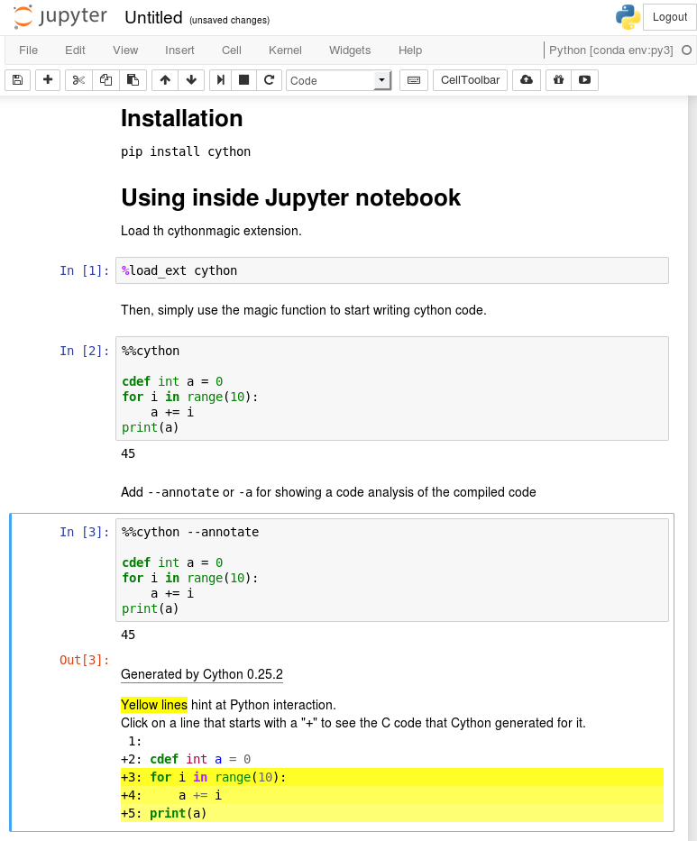
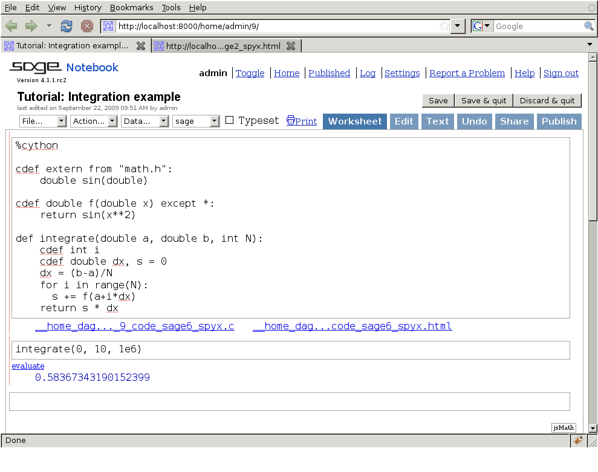

싸이선(Cython) 코드 빌드¶
싸이선 코드는 파이썬 코드와 달리 컴파일을 해야 한다. 컴파일을 하면 다음 두 가지 일이 일어난다.:
- 싸이선이
.pyx파일을 컴파일하여.c파일로 자동 변환한다. 이 안에는 파이썬 확장 모듈 코드가 있다.- 이
.c파일은 C 컴파일러에 의해 컴파일되어.so파일(윈도우에서는.pyd파일)이 된다. 이 파일은 파이썬 세션에서 직접 임포트할 수 있다.
싸이선 코드를 빌드하는 방법은 다음처럼 여러가지 있다.:
- distutils 패키지를 사용한
setup.py사용. 가장 정상적이며 추천하는 방법.pyximport를 사용하, 싸이선.pyx파일을 일반.py파일처럼 임포트하는 방법. (백그라운드에서 distutils가 컴파일 및 빌드 작업을 한다).cython명령줄 유틸리티는 수동으로 실행하여.pyx파일을.c파일로 바꾸고 다시 수동으로.c파일을 파이썬에 임포트 가능한 라이브러리나 DLL로 바꾸는 방법. (이러한 수동 실행은 디버깅이나 실험에서 많이 사용된다.)- 주피터([Jupyter]) 노트북이나 [Sage] 노트북을 사용하는 방법. 둘다 싸이선 코드를 인라인 실행할 수 있다.
현재는 distutils가 싸이선으로 빌드하고 배포하는 가장 일반적인 방법이다. 다른 방법은 참조 매뉴얼의 소스 파일과 컴파일절에서 자세히 설명한다.
distutils로 싸이선 모듈을 빌드하는 법¶
간단한 “hello world”가 hello.pyx 파일에 있다고 하자:
def say_hello_to(name):
print("Hello %s!" % name)
여기에 대응하는 setup.py 스크립트를 다음처럼 만든다.:
from distutils.core import setup
from Cython.Build import cythonize
setup(
name = 'Hello world app',
ext_modules = cythonize("hello.pyx"),
)
빌드하려면 python setup.py build_ext --inplace를 실행한다.
실행이 완료되면 파이썬 세션을 시작하고
from hello import say_hello_to라고 입력하여
함수가 정상적으로 임포트되었는지 확인한다.
주피터 노트북 사용¶
주피터 노트북에서는 웹 브라우저 상에서 편하게 싸이선을 쓸 수 있다. pip로 주피터 노트북을 설치하는 법은 다음과 같다.:
(venv)$ pip install jupyter
(venv)$ jupyter notebook
싸이선 컴파일 지원을 설정하려면 노트북안에서 다음 명령으로
Cython 확장 플러그인을 로드한다.:
%load_ext Cython
그런다음 세을 %%cython 매직명령으로 시작한다:
%%cython
cdef int a = 0
for i in range(10):
a += i
print(a)
--annotate 옵션을 붙이면 싸이선 코드 분석을 할 수 있다.:
%%cython --annotate
...

Sage 노트북 사용법¶

Sage 배포판 사용자는 Sage 노트북에서 셀 위에 %cython이라고 치면
싸이선 코드를 편집하고 컴파일 할 수 있다.
싸이선 셀에서 정의된 변수와 함수는 자동으로 현재 사용하는 파이썬 세션에 임포트된다.
| [Jupyter] | http://jupyter.org/ |
| [Sage] |
|